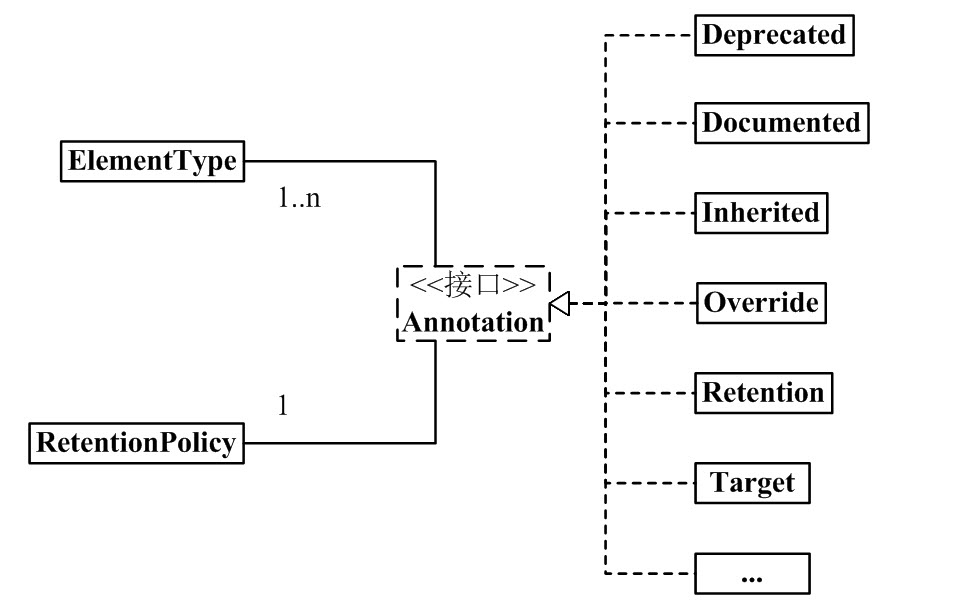

初识注解
简介
- Annotation提供了一种为恒旭元素设置元数据的方法。
- 类似于修饰符，可用于修饰包、类、构造器、方法、成员变量、参数、局部变量的声明。
- Annotation是一个接口，程序可以通过反射来获取指定程序元素的Annotation对象。
- Annotation不影响程序代码的运行。
- 如果希望Annotation在程序运行时起作用，只有通过某种配套工具对Annotation的信息进行访问和处理。访问和处理Annotation的工具统称为APT。
内置注解
Java定义了一套注解如下。
- 以下注解在java.lang中：
- @Override - 检查该方法是否是重写方法。如果发现其父类，或者是引用的接口中并没有该方法时，会报编译错误。
- @Deprecated - 标记过时方法。如果使用该方法，会报编译警告。
- @SuppressWarnings - 指示编译器去忽略注解中声明的警告。
- @SafeVarargs - Java 7 开始支持，忽略任何使用参数为泛型变量的方法或构造函数调用产生的警告。
- @FunctionalInterface - Java 8 开始支持，标识一个匿名函数或函数式接口。
- 以下注解在java.lang.annotation中，他们作用在其他注解中，也成为元注解：
- @Retention - 标识这个注解怎么保存，是只在代码中，还是编入class文件中，或者是在运行时可以通过反射访问。
- @Documented - 标记这些注解是否包含在用户文档中。
- @Target - 标记这个注解应该是哪种 Java 成员。
- @Inherited - 标记这个注解是继承于哪个注解类(默认 注解并没有继承于任何子类)
- 详解：假设，我们定义了某个 Annotaion，它的名称是 MyAnnotation，并且 MyAnnotation 被标注为 @Inherited。现在，某个类 Base 使用了MyAnnotation，则 Base “具有了注解 MyAnnotation”；现在，Sub 继承了 Base，由于 MyAnnotation 是 @Inherited的(具有继承性)，所以，Sub 也 “具有了注解 MyAnnotation”。
- @Repeatable - Java 8 开始支持，标识某注解可以在同一个声明上使用多次。
Annotation架构

从中可以看出：
- 1个Annotation对象，都会有唯一的RetentionPolicy属性。
- 1 个 Annotation 对象，可以有若干个 ElementType 属性。
- Annotation 有许多实现类，包括：Deprecated, Documented, Inherited, Override 等等。
下面介绍，在java Annotation的组成中，有三个重要的主干类：
//Annotation.java |
//ElementType.java |
//RetentionPolicy.java |
说明：
- Annotation是一个接口，继承这个接口的就是注解。
- ElementType 是 Enum 枚举类型，它用来指定 Annotation 的类型。
- 例如，若一个 Annotation 对象是 METHOD 类型，则该 Annotation 只能用来修饰方法。
- RetentionPolicy 是 Enum 枚举类型，它用来指定 Annotation 的策略。通俗点说，就是不同 RetentionPolicy 类型的 Annotation 的作用域不同。
- 若 Annotation 的类型为 SOURCE，则意味着：Annotation 仅存在于编译器处理期间，编译器处理完之后，该 Annotation 就没用了。 例如，” @Override” 标志就是一个 Annotation。当它修饰一个方法的时候，就意味着该方法覆盖父类的方法；并且在编译期间会进行语法检查！编译器处理完后，”@Override” 就没有任何作用了。
- 若 Annotation 的类型为 CLASS，则意味着：编译器将 Annotation 存储于类对应的 .class 文件中，它是 Annotation 的默认行为。
- 若 Annotation 的类型为 RUNTIME，则意味着：编译器将 Annotation 存储于 class 文件中，并且可由JVM读入。
注解通用定义
|
说明：上面的作用是定义了一个注解，名为MyAnnotation1。定义了MyAnnotation1之后，我们可以在代码中通过@MyAnnotation1使用它。其他的，@Documented, @Target, @Retention, @interface都是来修饰MyAnnotation1的。
@interface：使用 @interface 关键字定义注解时，意味着它实现了java.lang.annotation.Annotation 接口，即该注解就是一个Annotation。
@Documented：类和方法的 Annotation 在缺省情况下是不出现在 javadoc 中的。如果使用 @Documented 修饰该 Annotation，则表示它可以出现在 javadoc 中。定义 Annotation 时，@Documented 可有可无；若没有定义，则 Annotation 不会出现在 javadoc 中。
**@Target(ElementType.TYPE)**：ElementType 是 Annotation 的类型属性。而 @Target 的作用，就是来指定 Annotation 的类型属性。
@Target(ElementType.TYPE) 的意思就是指定该 Annotation 的类型是 ElementType.TYPE。这就意味着，MyAnnotation1 是来修饰”类、接口（包括注释类型）或枚举声明”的注解。
定义 Annotation 时，@Target 可有可无。若有 @Target，则该 Annotation 只能用于它所指定的地方；若没有 @Target，则该 Annotation 可以用于任何地方。
**@Retention(RetentionPolicy.RUNTIME)**：前面我们说过，RetentionPolicy 是 Annotation 的策略属性，而 @Retention 的作用，就是指定 Annotation 的策略属性。
@Retention(RetentionPolicy.RUNTIME) 的意思就是指定该 Annotation 的策略是 RetentionPolicy.RUNTIME。这就意味着，编译器会将该 Annotation 信息保留在 .class 文件中，并且能被虚拟机读取。
定义 Annotation 时，@Retention 可有可无。若没有 @Retention，则默认是 RetentionPolicy.CLASS。
根据注解是否包含成员变量，可以把注解分为
- 标记注解：没有成员变量的注解，这种注解仅利用自身是否存在来提供信息。
- 元数据注解：包含成员变量的注解，因为它可以接受更多的元数据，所以也被称为元数据注解。
Annotation作用
编译检查
Annotation 具有”让编译器进行编译检查的作用”。@SuppressWarnings, @Deprecated 和 @Override 都具有编译检查作用。
☆在反射中解析并使用 Annotation
程序通过反射机制可以解析被修饰的方法中的注解数据，当程序获取特殊标记后，可以做出相应的处理。这在Spring等框架中经常使用。详见下面代码。
//AnnotationTest.java |
运行结果：
somebody: lily, 18 |
根据Annotation生成帮助文档
@Documented
帮忙查看代码
通过 @Override, @Deprecated 等，我们能很方便的了解程序的大致结构。
附属文件的自动生成
例如部署描述符或者bean信息类。
测试、日志等代码的自动生成
//TODO
框架中常用的注解
Spring
//TODO
Mybatis
//TODO
小结
注解就像标签，是程序判断执行的依据。比如，程序读到@Test就知道这个方法是待测试方法，而@Before的方法要在测试方法之前执行
注解需要三要素：定义、使用、读取并执行
注解分为自定义注解、JDK内置注解和第三方注解（框架）。自定义注解一般要我们自己定义、使用、并写程序读取，而JDK内置注解和第三方注解我们只要使用，定义和读取都交给它们
大多数情况下，三角关系中我们只负责使用注解，无需定义和执行，框架会将注解类和读取注解的程序隐藏起来，除非阅读源码，否则根本看不到。平时见不到定义和读取的过程，光顾着使用注解，久而久之很多人就忘了注解如何起作用了！
参考资料
- 怎样理解 Java 注解和运用注解编程？
- 菜鸟教程-Java 注解（Annotation）
- 《Java疯狂讲义 第十四章 注解》